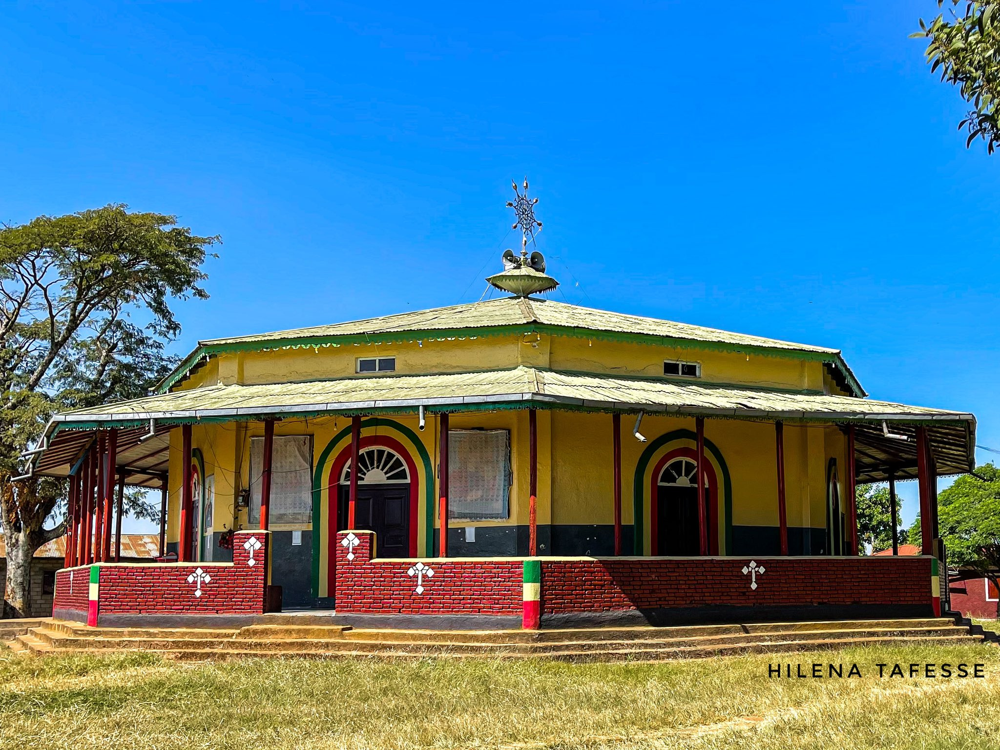
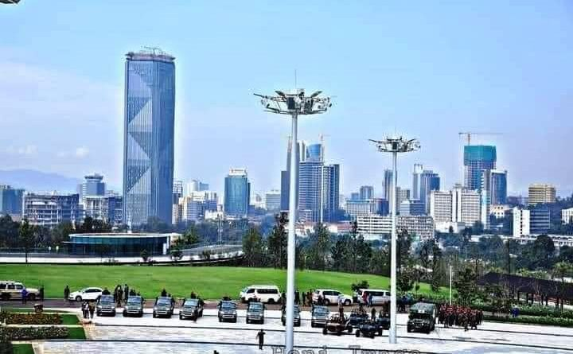
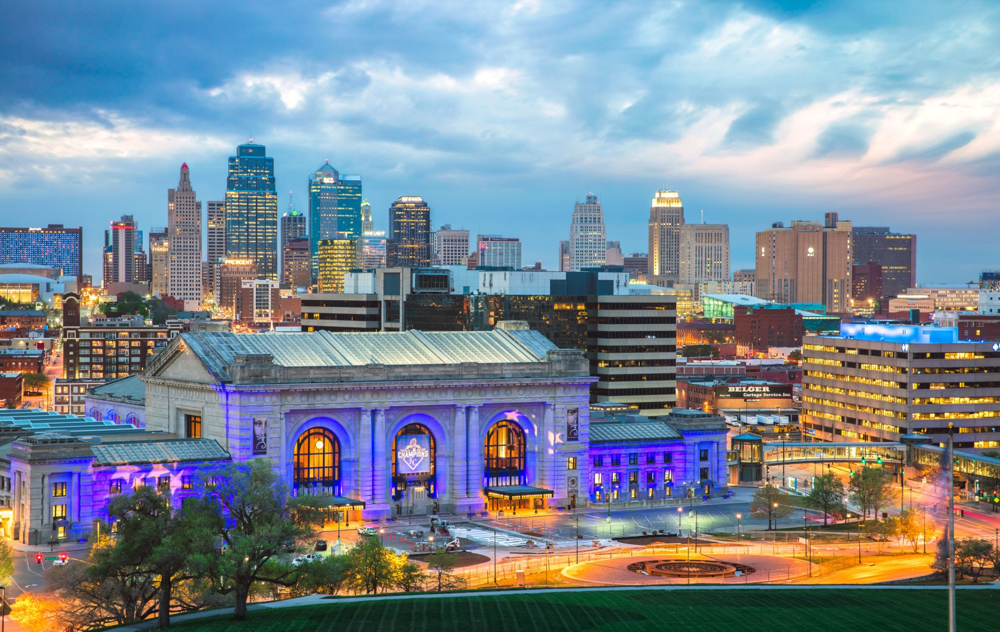

Gore,Ethiopia
I was born and raised in gore, Gore is small city located in western part of Ethiopia. The weather condition of the city is 13 months of sunshine,oh wait you will be confused, when i stated 13 months sunsunshine.Here is the fact about the 13 months, in Ethiopia we use 12 months of 30 days and the rest 5/6 days count as one month called 13th month (pagume).when i back to my topic, my family and most of my relative live there. when i turned 12 year old, my father sent me to boarding school located in Capital city of Ethiopia,Addis ababa .
Addis Ababa,Ethiopia
Addis Ababa, Ethiopia’s sprawling capital in the highlands bordering the Great Rift Valley, is the country’s commercial and cultural hub. Its National Museum exhibits Ethiopian art, traditional crafts and prehistoric fossils, including replicas of the famous early hominid, "Lucy." The burial place of the 20th-century emperor Haile Selassie, copper-domed Holy Trinity Cathedral, is a neo-baroque architectural landmark. I stay east part of Addis Ababa Akaki and attend school called Akaki L'esprance Adventist schooland graduate highschool
Hawasa,Ethiopia
Awasa, also called Hawassa, is a city in the Great Rift Valley of central Ethiopia. It lies at the eastern edge of large Lake Awasa, with its resident hippos. Water birds gather around a popular fish market along the lake’s shore. Nearby, the waterside Amora Gedel National Park is inhabited by monkeys. To the northwest, Senkele Swayne’s Hartebeest Sanctuary is home to these endangered African antelopes. I studied my undergradute class here and graduated in 2015 and back to Addis Ababa Ethiopia.
 Main Street of Hawasa,Ethiopia
Main Street of Hawasa,Ethiopia
Kansas City,MO
After my engagment to my fience,I moved To Kansas City and marrried in 2018. I have one son and daughter and am working in construction Company. i have no freind or family in kansas city. lately i joined facebook group trying to make friends and I love kansas city
 Downtown View, Kansas City,MO